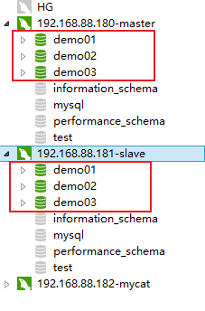
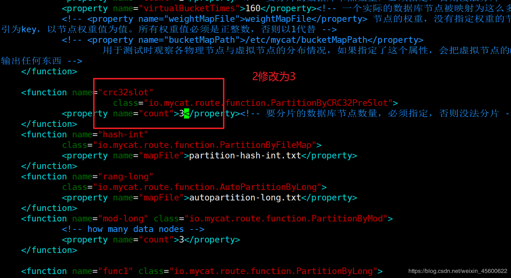
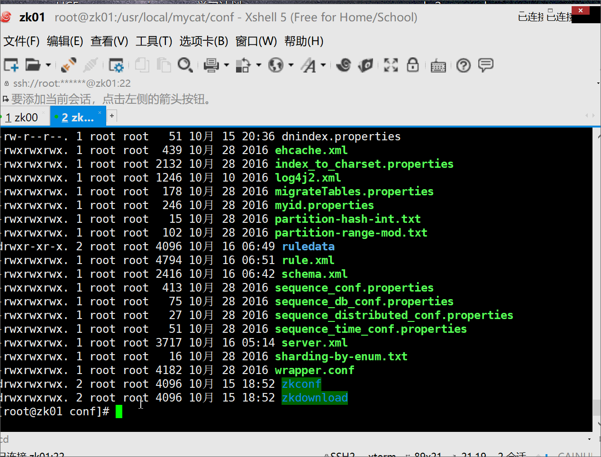
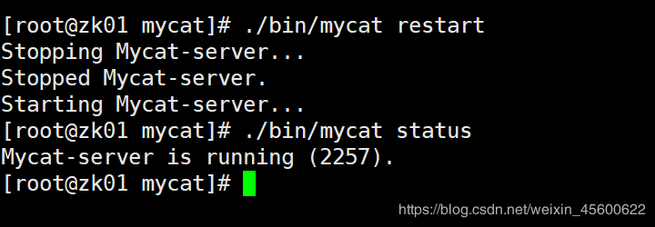
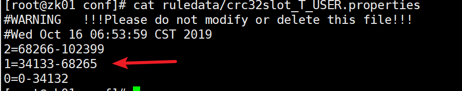
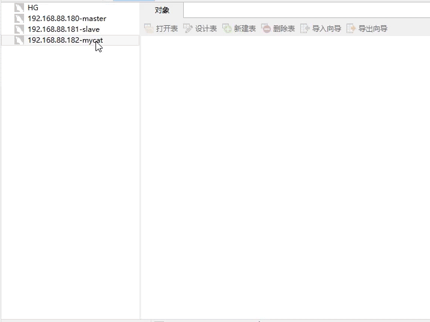
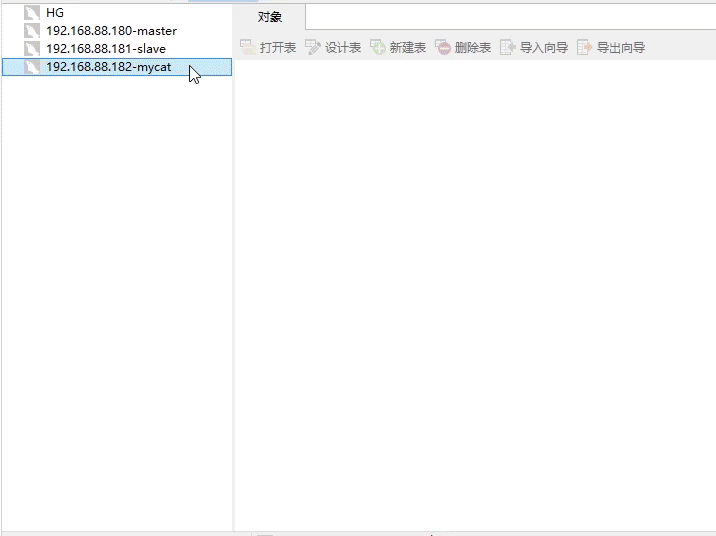
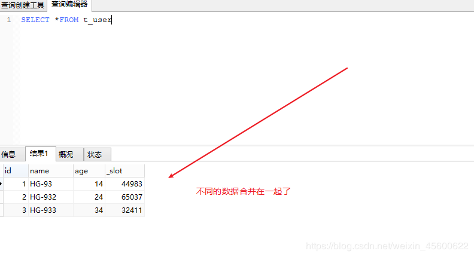

原文出处:本文由博客园博主HG-93提供。
原文连接:https://www.cnblogs.com/cxydmx/p/11740721.html
原文连接:https://www.cnblogs.com/cxydmx/p/11740721.html
本文我们来介绍下MyCat的分库分表操作
分库分表
一、分片规则介绍
在rule.xml中定义了各种myCat支持的分片规则。
- 取模mod-long
- 自然月分片 sharding-by-month
- 按日期(天)分片sharding-by-date
- 按单月小时拆分sharding-by-hour
- 范围约定，提前规划好分片字段某个范围属于哪个分片，auto-sharding-long
- 范围求模分片
- 取模范围约束sharding-by-pattern
- 分片枚举sharding-by-intfile
- 固定分片hash算法
- 截取数字hash解析sharding-by-stringhash
- 一致性hash
- 日期范围hash分片rangeDateHash
- 截取数字做hash求模范围约束sharding-by-prefixpattern
- 应用指定，在运行阶段有应用自主决定路由到那个分片。sharding-by-substring
- 冷热数据分片 sharding-by-date
- 有状态分片算法
- crc32slot分片算法
注意:
- id中推荐配置主键列
- 所有的 tableRule 只能使用一次。如果需要为多个表配置相同的分片规则，那么需要在此重新定义该规则。
- 在 crc32Slot 算法中的分片数量一旦给定，MyCat 会将该分片数量和 slor 的取值范围保存到文件中。在次修改分片数量时是不会生效的，需要将该文件删除。文件位置位于 conf目录中的 ruledata 目录中。
二、分库配置
2.1 创建3个数据库
在master中分别创建3个数据库demo1,demo2,demo3,因为主从的关系会同步到从库中。
create database demo1 default character set utf8;
create database demo2 default character set utf8;
create database demo3 default character set utf8;

2.2 schema.xml配置
修改schema.xml文件中的信息，如下：
<?xml version="1.0"?>
<!DOCTYPE mycat:schema SYSTEM "schema.dtd">
<mycat:schema xmlns:mycat="http://io.mycat/">
<schema name="TESTDB" checkSQLschema="false" sqlMaxLimit="100">
<table name="t_user" dataNode="dn1,dn2,dn3" rule="crc32slot" />
</schema>
<dataNode name="dn1" dataHost="localhost1" database="demo1" />
<dataNode name="dn2" dataHost="localhost1" database="demo2" />
<dataNode name="dn3" dataHost="localhost1" database="demo3" />
<dataHost name="localhost1" maxCon="1000" minCon="10" balance="1"
writeType="0" dbType="mysql" dbDriver="native" switchType="1" slaveThreshold="100">
<heartbeat>select user()</heartbeat>
<!-- can have multi write hosts -->
<writeHost host="hostM1" url="192.168.88.180:3306" user="root"
password="123456">
<!-- can have multi read hosts -->
<readHost host="hostS2" url="192.168.88.181:3306" user="root" password="123456" />
</writeHost>
</dataHost>
</mycat:schema>
注意:
- 因为有三个库，所以添加了三个
dataNode - 使用的分配规则是
crc32slot - 主从和读写分离设置没有动，所以
writeHost和readHost的配置没变
2.3 修改rule.xml文件
因为使用的是crc32slot算法，且有3个数据库，所以需要修改rule.xml中的配置

同时我们需要删除掉ruledata目录中的规则文件，不然修改的3不会起作用

重启mycat服务

查看分配规则

2.3 在mycat中创建t_user表
先删除原来创建的t_user表，然后通过mycat创建t_user表示，通过mycat创建会多出来一个_slot字段。
CREATE TABLE t_user (
`id` INT,
`name` VARCHAR (30),
`age` INT,PRIMARY KEY (`id`)
) ENGINE = INNODB DEFAULT CHARSET = utf8;

三、分库测试
在mycat客户端插入数据，然后去对应的物理库中查询具体的情况
insert into t_user(id,name,age)values(1,'HG-93',14)
注意:插入语句的语法要完整，不要偷懒省略字段，尤其是id自增长！！！

数据按照我们设置的规则分别存储到了各自数据的表结构中了。
然后我们来看下查询操作，通过mycat看能否将所有的数据都查询出来，

关注微信公众号【程序员的梦想】，专注于Java，SpringBoot，SpringCloud，微服务，Docker以及前后端分离等全栈技术。